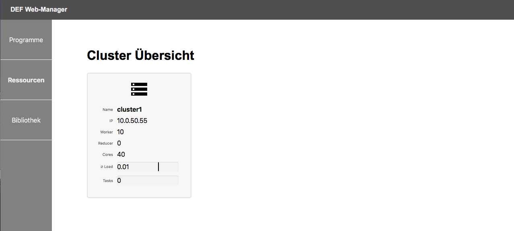
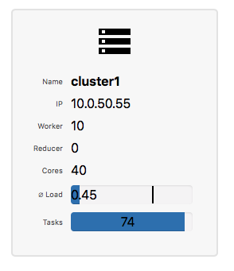
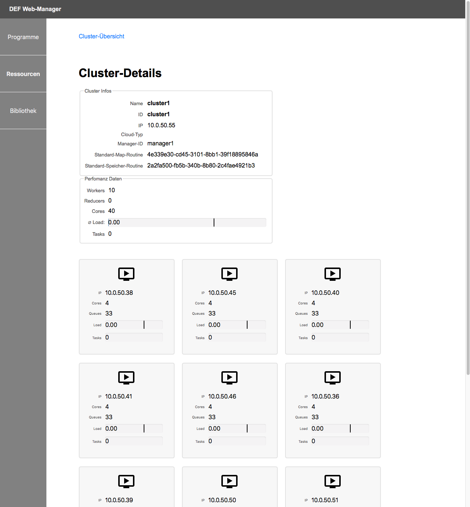
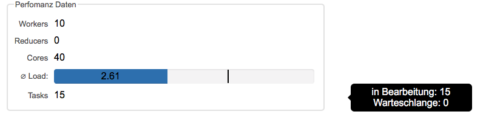
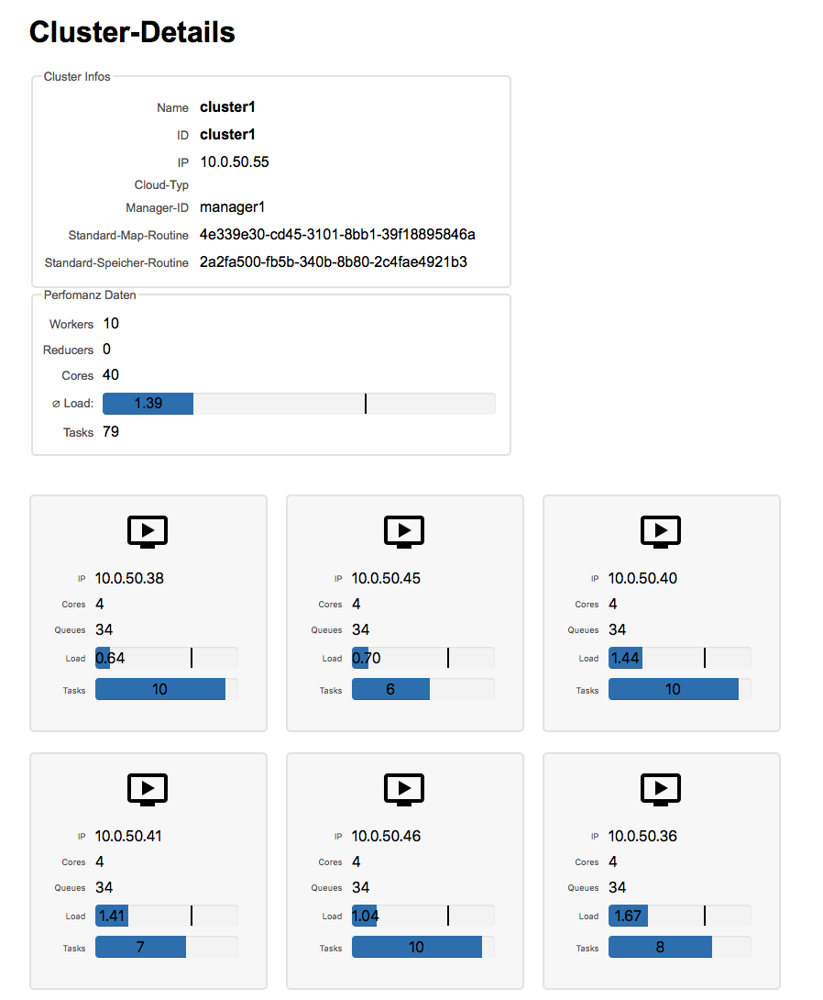
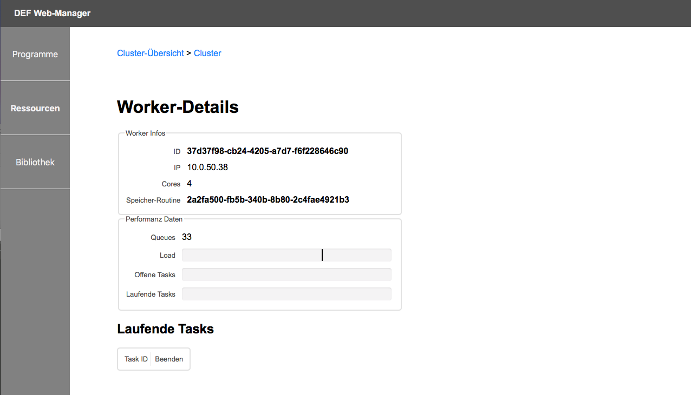
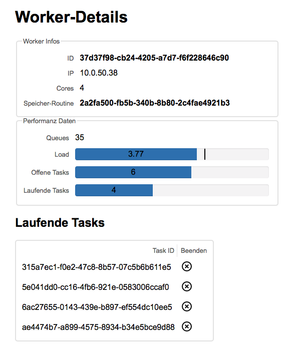

Neben dem Monitoring der Programme ist der DEF Web-Manager ebenfalls für das Monitoring der Ressourcen gedacht. So werden in einer Cluster-Übersicht alle Cluster dargestellt, die das DEF aktuell für Berechnungen verwenden kann, inklusive der direkten Anzeige der aktuellen Auslastung des gesamten Clusters.
Sowohl für die einzelnen Cluster als auch für die Worker, die sich innerhalb der Cluster befinden, wird eine Detail-Ansicht mit allen relevanten Informationen zur jeweiligen Komponente inklusive der aktuellen Auslastung zur Verfügung gestellt.
Aktuell kann der DEF Web-Manager nur für das Monitoring der Ressourcen verwendet werden, in Zukunft soll jedoch auch die Möglichkeit geboten werden, vorhandene Cluster bzw. Worker aus dem System zu entfernen und neue hinzuzufügen.
In der Cluster-Übersicht werden alle Cluster aufgelistet, die aktuell im DEF registriert sind. Dies ist in der folgenden Grafik zu sehen.

Für jeden Cluster werden hier die wichigsten Informationen auf einen Blick dargestellt. Zu diesen Informationen gehören:
- Name
- IP-Adresse
- Anzahl der Worker im Cluster
- Anzahl der Reducer im Cluster
- Gesamtanzahl aller Cores
- durchschnittlicher Load über alle Worker
- Anzahl Tasks, die noch nicht abgeschlossen wurden
Der Name des Clusters kann beim Registrieren des Clusters im DEF festgelegt werden. Dieser ist als einfaches Erkennungs- und Unterscheidungsmerkmal für den Benutzer gedacht.
Die IP-Adresse stellt die Adresse dar, über die der Cluster erreicht werden kann.
Die Anzahl der Worker gibt an, wie viele Worker sich aktuell im Cluster befinden, die für Berechnungen verwendet werden können.
Die Anzahl der Reducer gibt an, wie viele Reducer-Worker sich im Cluster befinden. Diese werden verwendet, um die Task-Ergebnisse eines Jobs bei Bedarf zu reduzieren.
Die Anzahl der Cores wird berechnet, indem die Anzahl der Cores aller einzelnen Worker aufsummiert werden.
Der Load eines Workers bezeichnet die auf diesem Worker momentan laufenden oder auf bestimmte Ereignisse wartenden Prozesse. Um darzustellen, wie die aktuelle Auslastung des gesamten Clusters ist, werden die Loads über alle Worker des Clusters aufsummiert und der Durchschnitt daraus gebildet. Der schwarze Balken in der Load-Darstellung markiert die durchschnittliche Anzahl der Cores der Worker. Das Verhältnis des aktuellen Loads und der Anzahl der Cores gibt Auskünfte über die momentane Auslastung des Clusters. Befindet sich der Load unter dem Balken, ist der Cluster nicht komplett ausgelastet. Es kann auch passieren, dass der Load über den Balken reicht, je weiter dies jedoch der Fall ist, desto überlasteter ist der Cluster. In der folgenden Grafik ist ein Cluster mit Load zu sehen.

Die Anzahl der Tasks gibt an, wie viele Tasks sich aktuell auf allen Workern gemeinsam im Cluster befinden, die noch in der Warteschlange oder in Bearbeitung sind.
Aktuell kann der DEF Web-Manager nur für das Monitoring der Ressourcen verwendet werden. Es ist jedoch angedacht, dass es in Zukunft möglich sein soll, über den DEF Web-Manager neue Cluster zum DEF hinzuzufügen.
Durch einfaches Klicken auf ein Cluster-Symbol können die Cluster-Details geöffnet werden.
In den Cluster-Details werden zusätzliche Informationen zum jeweiligen Cluster dargestellt. Diese umfassen die Cluster-Infos, Performanz-Daten und die zum Cluster gehörenden Worker.

Die Cluster-Infos enthalten folgende Informationen:
- Name
- ID
- IP-Adresse
- Cloud-Typ
- Manager-ID
- Standard-Map-Routine
- Standard-Speicher-Routine
Der Name des Clusters kann beim Registrieren des Clusters im DEF festgelegt werden und ist als einfaches Erkennungs- und Unterscheidungsmerkmal für den Benutzer gedacht.
Die ID wird vom DEF für die Identifikation des Clusters innerhalb des Systems verwendet.
Die IP-Adresse ist die Adresse, über die der Cluster angesprochen werden kann.
Der Cloud-Typ kennzeichnet, ob es sich um einen Cluster in der Private oder Public Cloud handelt.
Das Manager-Module des DEFs ist der Einstiegspunkt der Clients ins DEF und leitet alle Anfragen an den entsprechenden Cluster weiter. Die dargestellte Manager-ID ist die ID des Managers, der den jeweiligen Cluster verwaltet.
Für jeden Job kann eine Map-Routine definiert werden, die vom DEF für den Map-Prozess verwendet wird. Für jeden Cluster kann eine Standard-Map-Routine angegeben werden, die automatisch bei jedem Job, der auf diesem Cluster ausgeführt wird, verwendet wird, sofern keine andere Map-Routine definiert wurde. Aktuell wird hier nur die ID der Map-Routine angegeben, in Zukunft soll jedoch eine direkte Verlinkung auf die entsprechende Routine platziert werden.
Die Speicher-Routine definiert, wie und wo die Ergebnisse der Berechnungen eines Tasks abgespeichert werden sollen. Pro Cluster kann eine Standard-Speicher-Routine festgelegt werden.
Unter den Cluster-Infos befinden sich die Performanz-Daten. Hier wird
- die Anzahl der Worker,
- die Anzahl der Reducer,
- die Gesamtanzahl aller Cores über alle Worker aufsummiert,
- der durschnittliche Load über alle Worker und
- die Anzahl der noch offenen Tasks
aufgelistet.
Wird der Mauszeiger über die Anzahl der noch offenen Tasks bewegt, erscheint eine genauere Unterteilung der Tasks in "in Bearbeitung" und "Warteschlange".

Unter den Performanz-Daten sind die einzelnen Worker, die zu dem entsprechenden Cluster gehören, dargestellt. Pro Worker sind folgende Informationen aufgelistet:
- IP-Adresse
- Anzahl der Cores
- Anzahl der Queues
- aktueller Load
- Anzahl der offenen Tasks
Über die angegebene IP-Adresse kann der entsprechende Worker angesprochen werden.
Die Anzahl der Cores gibt an, wie viele Cores der bestimmte Worker für seine Berechnungen zur Verfügung hat.
Wenn ein neuer Job im Cluster gestartet wird, wird automatisch auf jedem Worker im Cluster eine Warteschlange (Queue) für die Tasks des entsprechenden Jobs angelegt. Werden die Tasks auf die unterschiedlichen Worker verteilt, wandern diese in die Warteschlangen, aus denen die Worker die Tasks, die berechnet werden sollen, entnehmen. Wurde ein Job abgeschlossen, werden die dazugehörigen Warteschlangen nach einer gewissen Zeit vom Worker gelöscht. Die Anzahl der Queues auf einem Worker zeigt also an, wie viele unterschiedliche Jobs in letzter Zeit darauf bearbeitet wurden. Wenn ein Worker viele Warteschlangen hat, obwohl schon lange keine Berechnungen mehr darauf ausgeführt wurden, kann dies bedeuten, dass ein Job nicht richtig beendet wurde.
Wie in der Cluster-Übersicht bereits erwähnt, gibt der Load eines Workers an, wie viele momentan laufende oder auf bestimmte Ereignisse wartende Prozesse sich aktuell auf dem Worker befinden. Der schwarze Balken in der Load-Darstellung markiert die Anzahl der Cores auf dem Worker. Befinden sich auf einem Worker so viele von diesen eben erwähnten Prozessen wie es Cores gibt, ist der Worker optimal ausgelastet. Es kann jedoch auch vorkommen, dass der Load über die Core-Anzahl steigt, was jedoch kein Problem darstellt. Je höher der Load im Verhältnis zur Core-Anzahl jedoch wird, desto überlasteter ist der Worker.
Zusätzlich wird pro Worker angezeigt, wie viele Tasks sich auf dem entsprechenden Worker noch in der Warteschlange oder in Bearbeitung befinden.
In der folgenden Grafik ist zu sehen, wie ein Cluster, der gerade Berechnungen ausführt, dargestellt wird.

Aktuell kann der DEF Web-Manager nur für das Monitoring der Worker verwendet werden. Es ist jedoch angedacht, dass über den DEF Web-Manager neue Worker zu einem Cluster hinzugefügt und bestehende gelöscht werden können.
Durch einfaches Klicken auf einen Worker in der Übersicht, können die Worker-Details geöffnet werden.
In den Worker-Details werden zusätzliche Informationen zum jeweiligen Worker dargestellt. Diese Informationen umfassen Worker-Infos, Preformanz-Daten und laufende Tasks.

Die Worker-Infos enthalten folgende Daten:
- ID
- IP-Adresse
- Anzahl der Cores
- ID der Speicher-Routine
Die ID des Workers ist eine 32 Zeichen lange UUID, die vom DEF automatisch generiert wird und für die Identifikation des entsprechenden Workers innerhalb des Systems verwendet wird.
Über die angegebene IP-Adresse kann der spezielle Worker angesprochen werden.
Die Anzahl der Cores gibt an, wie viele Cores auf diesem Worker für Berechnungen zur Verfügung stehen.
Pro Cluster kann eine Standard-Speicher-Routine festgelegt werden, die definiert, wie und wo die Ergebnisse der Berechnungen gespeichert werden. Wird bei einem Worker nichts Anderes definiert, wird die Standard-Speicher-Routine des Clusters übernommen.
Unter den Worker-Infos befinden sich die Performanz-Daten, die
- die Anzahl der Queues,
- den aktuellen Load,
- die Anzahl der offenen Tasks und
- die Anzahl der laufenden Tasks
beinhalten.
Die laufenden Tasks auf diesem Worker sind unter den Performanz-Daten aufgelistet. In der folgenden Grafik ist ein Worker zu sehen, der gerade Berechnungen durchführt.

Die laufenden Tasks können durch Klicken auf das Beenden-Icon hinter der Task-ID abgebrochen werden.